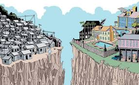

Por que falar sobre desigualdade social?
A desigualdade social impacta a vida de milhões de pessoas e é uma das principais barreiras para o desenvolvimento sustentável. Este site busca informar e conscientizar sobre as raízes e os efeitos da desigualdade social no Brasil e no mundo.
